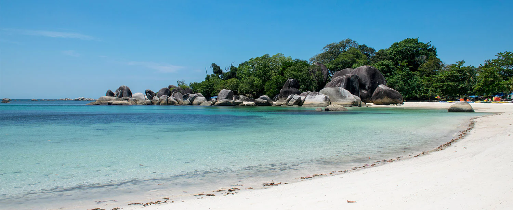

A Tropical Paradise Resort in the Beautiful Belitung Island

Flanked by the Gaspar and Karimata Strait, off the eastern coast of Sumatra, Belitung
is a beautiful island blessed with magnificent landscape, divine beaches, and outstanding
scenery. The coast of Tanjung Kelayang, in the northern part of the island, is the heart
of Belitung’s splendor. This tropical wonderland is truly a place where you can get a
glimpse of what paradise would be like.
Once a secluded getaway, Tanjung Kelayang is now evolving into a vast integrated resort
following the government’s policy that designated the area as a 324.38 hectare Special
Economic Zone (SEZ). Here, pearly white sandy beach, unsullied sea, and nothing but
tropical wonder await. Moreover, what makes it truly unique is the formation of the
fascinating boulders that beautifully decorate the beach. These huge slabs of granite
extend to the sea and they seem to have been strewn here by the hands of mother nature.
Some of these boulders formation even resemble animal silhouettes, notably the shape
of a swallow or kelayang, hence the name.
The Pristine Wonder
Completing the splendor, thematic hotels and exclusive villas are continuously being
developed to cater to all your needs. An integrated transportation system will allow
you to explore every inch of the area with ease. Hopping to nearby islands will be
effortless. Aside from its amazing natural wonders, you will also get the chance to
explore Belitung’s unique culture and experience the friendliness and warm hospitality
of its local people.
Prepare yourself to be pampered with all kinds of tropical splendor. A trip to Tanjung
Kelayang will definitely give you a vacation experience like you never had before.
Get Around
The most convenient way to explore Tanjung Kelayang is by renting a car. For an alternative, there are also motorcycle rentals. If you wish to take a taxi, be sure to take the licensed ones, because there are taxis that don’t use meter. If you wish to embark on an island hopping adventure around the area, you can charter a fishing boat from local fishermen. However, for a more convenient way, you can arrange your trip with a tour operator or travel agent.
Get There
The most convenient way to reach Tanjung Kelayang is by flying to the H.A.S Hanandjoeddin International Airport in Tanjung Pandan, the capital city of Bangka Belitung Province. There are many flights that connect Jakarta, Palembang, and Batam to Tanjung Pandan. There are also direct flights from neighboring countries such as Malaysia and Singapore. From the airport, you can rent a car or take a taxi to Tanjung Kelayang for about 30 minutes to one hour drive. As you make your way to Tanjung Kelayang, you will also be presented with some of the most fascinating scenery of the island.